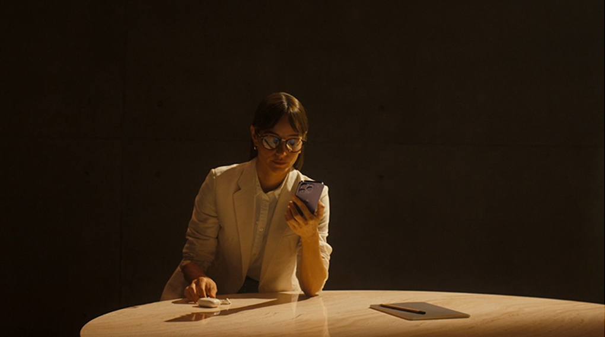

Mới đây thì chiếc điện thoại iPhone 14 Pro Max 256GB cũng đã được chính thức lộ diện trên toàn cầu và đập tan bao lời đồn đoán bấy lâu nay, bên trong máy sẽ được trang bị con chip hiệu năng khủng cùng sự nâng cấp về camera đến từ nhà Apple. iPhone 14 Pro Max sẽ vẫn giữ lại kiểu thiết kế đặc trưng đến từ các thế hệ trước như iPhone 13 series với các cạnh vuông vức và hai mặt gia công phẳng, đây vẫn được xem là kiểu thiết kế rất thịnh hành và thành công trên thị trường di động tính đến thời điểm hiện tại. Phía sau máy sẽ là một mặt lưng làm từ kính cao cấp giúp cho thiết bị có thể toát lên một vẻ ngoài sang trọng và hào nhoáng, đi kèm với đó sẽ là bộ khung thép không gỉ chắc chắn có khả năng chống chịu va đập tốt để thiết bị có thể đồng hành cùng bạn trong khoảng thời gian lâu dài hơn. Nhằm mang đến cho người dùng sự mới mẻ về chụp ảnh hay nhiều tính năng đáp ứng tác vụ nhiếp ảnh nâng cao thì Apple cũng đã tích hợp thêm nhiều tính năng. Bên cạnh đó sẽ là sự nâng cấp về thuật toán xử lý nhằm giúp cho thiết bị có thể hạn chế được tình trạng nhiễu ảnh, nâng cao khả năng xử lý màu trên camera.  Trải nghiệm nội dung sinh động trên một màn hình chất lượng Phía trước điện thoại iPhone sẽ được tích hợp một màn hình OLED có kích thước lên tới 6.7 inch, nhờ có một tấm nền xịn sò nên máy hoàn toàn có thể đem lại cho bạn những nội dung hiển thị có độ chính xác cao về màu sắc. Hỗ trợ tốt trong những công việc thiết kế đồ họa. Lần này sẽ có một sự thay đổi lớn trên phần màn hình chính là cụm tai thỏ đã được thay đổi để thay vào đó là một hình viên thuốc lạ mắt, đây chắc chắn sẽ là một đặc điểm nhận diện dễ dàng trên chiếc iPhone 14 Pro Max. Nâng cao khả năng xử lý nhờ chipset khủng Lần ra mắt này Apple đã giới thiệu một con quái vật về hiệu năng khi cho ra mắt vi xử lý A16 Bionic, với sự nâng cấp cả về CPU và GPU giúp cho thiết bị của bạn có thể xử lý tốt mọi nhu cầu sử dụng. Điện thoại RAM 6 GB hứa hẹn sẽ mang đến cho người dùng những trải nghiệm đa nhiệm mượt mà, thừa sức phục vụ cho bạn mở nhiều ứng dụng trong cùng một lúc. Những cải tiến tinh tế về mặt thiết kế cùng hiệu năng siêu mạnh mẽ đến từ bộ vi xử lý A16 Bionic làm cho iPhone 14 Pro Max 256GB trở thành mẫu điện thoại hoàn hảo hơn bao giờ hết. Ngoài ra vẫn còn thêm nhiều phiên bản iPhone 14 khác với nhiều tùy chọn hấp dẫn tại Thế Giới Di Động.